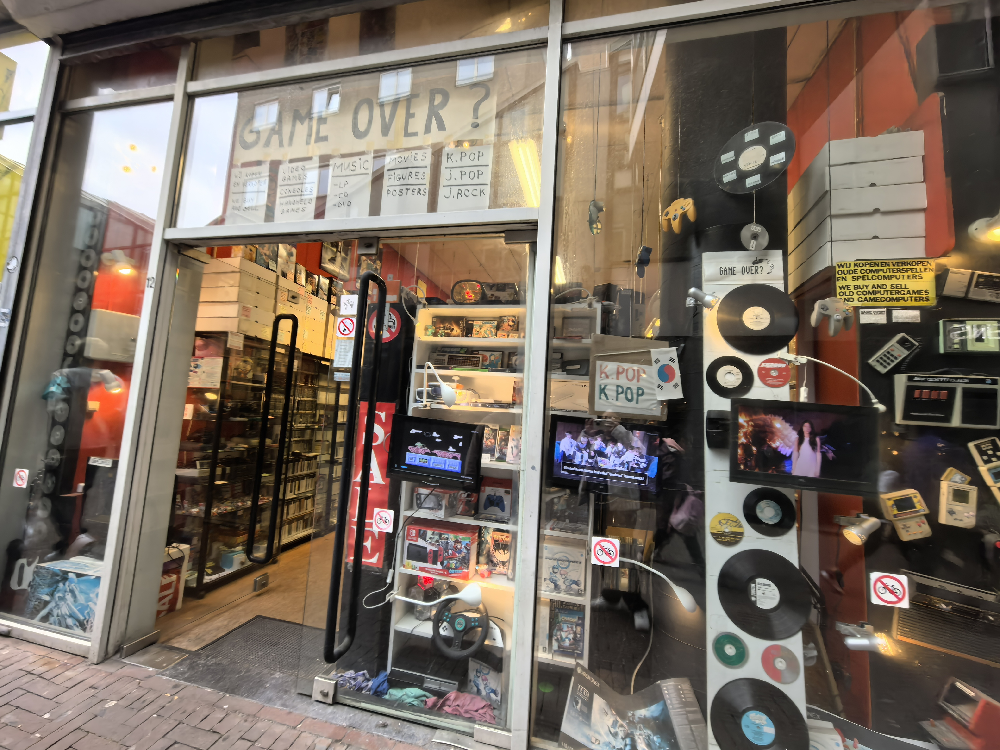
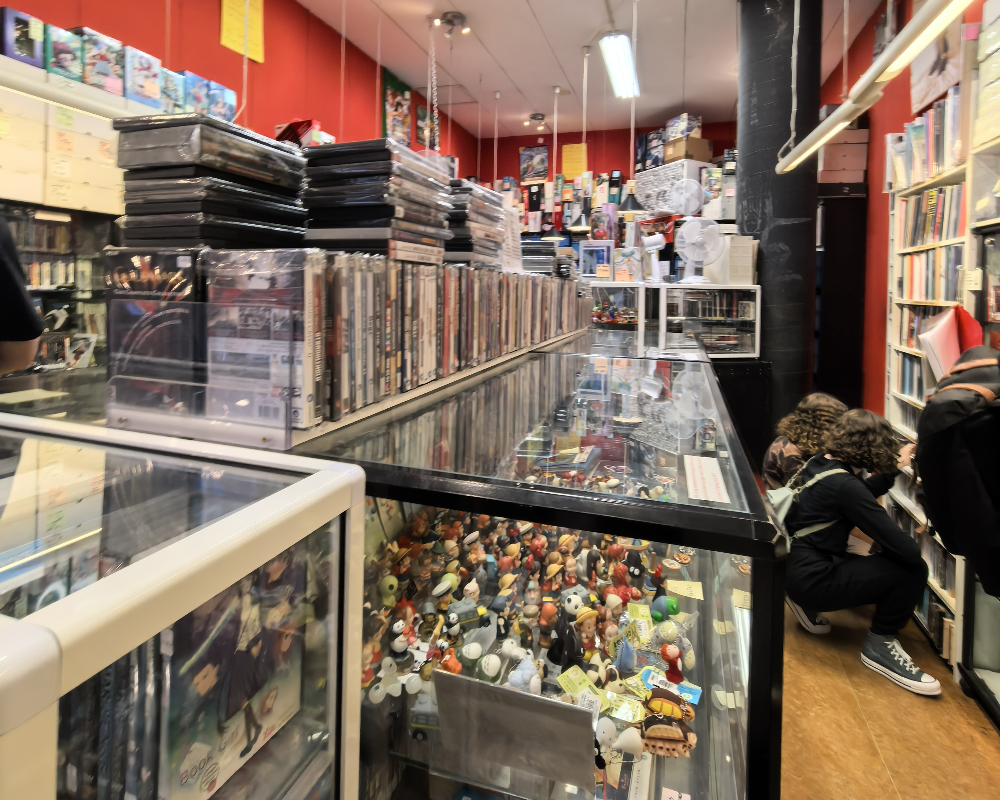

Hoe werkt het?
Bij Game Over? Kun je eenvoudig je gebruikte games en consoles verkopen. Breng je spullen naar de winkel en ontvang direct een vergoeding. Zij verkopen je items 2e hands, zodat ze een nieuw leven krijgen bij andere mensen. Zo verdien jij iets terug en maak je anderen blij!
Waarom 2e hands?
2e hands kopen is niet alleen goed voor je portemonnee, maar ook voor het milieu! Door gebruikte games en muziekdragers een tweede leven te geven, verminder je afval en draag je bij aan duurzaamheid
